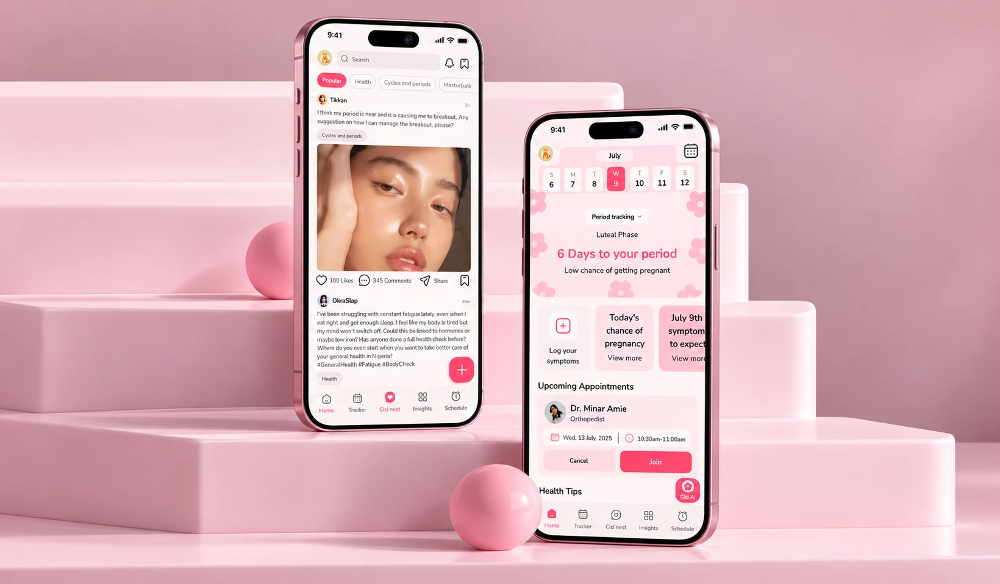
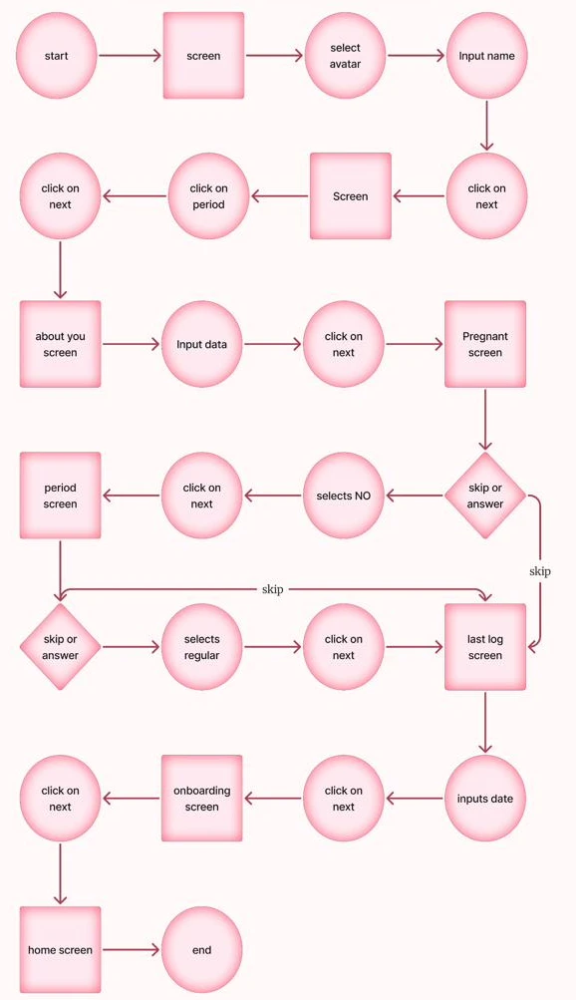
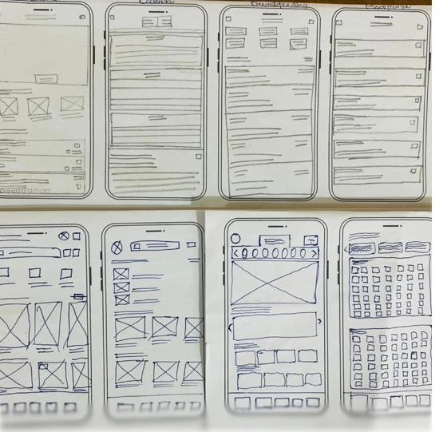
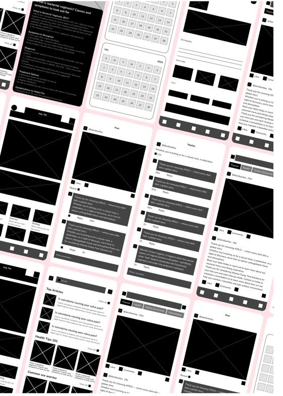

Case study 01 — Women’s health · Mobile app
One trusted, private place for Nigerian women to manage their health — from puberty to menopause.

Screens designed
Women surveyed, plus interviews
Life stages in one app
Age range designed for
Many Nigerian women manage their reproductive health alone — piecing together advice from WhatsApp groups and Google, unsure what to trust, and uncomfortable raising topics like menstruation, fertility or menopause. Cici brings tracking, credible information, community and real doctors into one private app.
Victoria led a five-person team through a design-thinking process — keeping research, decisions and screens moving together over five weeks.
Interviews with women of different ages; empathy maps from their real stories.
A clear problem statement and personas that aligned the team.
Brainstorms and flow sketches, prioritised with a value–effort matrix.
Mid-fidelity wireframes into an interactive prototype.
[What the team tested, with whom, and what changed.]
Interviews, a questionnaire and a competitive audit.
of the 34 women surveyed have used an app to track their cycle or other health issues.
No competitor covers every life stage: cycle apps ignore breastfeeding and menopause, while the breastfeeding app ignores cycles — and key features sit behind paywalls.
| Feature | Flo | Clue | Balance | Lactapp |
|---|---|---|---|---|
| Period tracking | Yes | Yes | Yes | No |
| Fertility predictions | Yes | Yes | No | No |
| Period symptom tracking | Yes | Yes | Yes | No |
| Breastfeeding tracking | No | No | No | Yes |
| Baby tracking | No | No | No | Yes |
| Personalized support | Paid only | Paid only | Paid only | Yes |
| Menopause symptom tracking | No | No | Yes | No |
| Sleep monitoring | Yes | Yes | Yes | No |
| Consultation | No | No | Yes | Yes |
| Mental health monitoring | Paid only | Paid only | Yes | No |
| Insights (articles) | Paid only | Paid only | Yes | Yes |
| Reminders | Yes | Yes | Yes | Yes |
| Community | Yes | No | Yes | Yes |
✓ available · ✕ not available · lock = paid only
Two personas at opposite ends of the journey, one journey map, six questions.
“I need to be more in control of my health.”
A first-time mum caring for her three-month-old while running a small clothing store. She recently moved and has no close relatives nearby, so she relies on Google and WhatsApp groups — and isn’t sure what to believe.
“Am I starting menopause, or is this just stress?”
Bisi has started experiencing irregular periods, hot flashes and mood swings, but brushes them off as work stress. She values privacy and feels talking about these changes publicly is taboo.
“Is this legit? I don’t want just any app knowing about my body.”
“It looks good… but will it really help me?”
“Okay, this feels personal… not bad.”
“These women feel what I feel? I thought I was alone.”
“This is actually helping. I want to keep this up.”
Help women access trusted health information in a way that feels simple and relatable?
→ Bite-sized, culturally relevant articles for each life stage.
Encourage women to openly manage their reproductive health without shame?
→ Personalised, discreet trackers with neutral icons and names.
Create a safe, private space to ask health questions anonymously?
→ An anonymous, moderated community forum.
Connect women to affordable health professionals, even in rural areas?
→ In-app bookings for virtual consults with verified doctors and midwives.
Design for urban and rural women with varying tech literacy and internet access?
→ A low-data mode with minimal images and offline reading.
Support women at every stage — puberty to menopause — in one platform?
→ Onboarding that tailors content and tools to age or life stage.
Mapping onboarding and the information architecture.

From paper to structured screen logic.


A soft, feminine style in orchid pink — calm enough for sensitive topics.
The prototype simulated the full journey: tracking tools, content access and community, with a floating Cici AI button always within reach.
Nunito, Solar & Huge icons, and a four-step palette.
In five weeks the team took Cici from interviews to a 50+ screen prototype covering tracking, Cici nest, insights, scheduling and virtual consults.
[Findings from the testing stage and what the team changed.]
[What Victoria learned about running research and decisions across a five-person team.]
[What she would build or test next — e.g. the low-data mode with rural users.]
Mobile payments, end-to-end — a wallet that makes moving money feel like one quick tap.